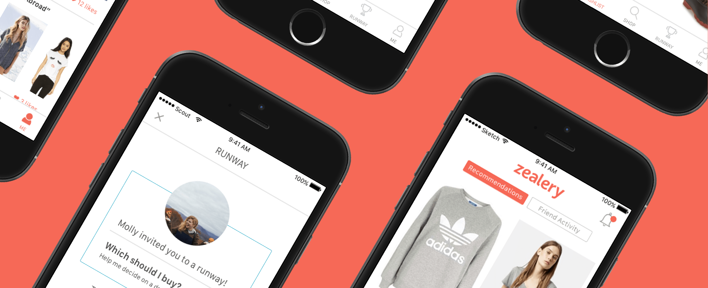
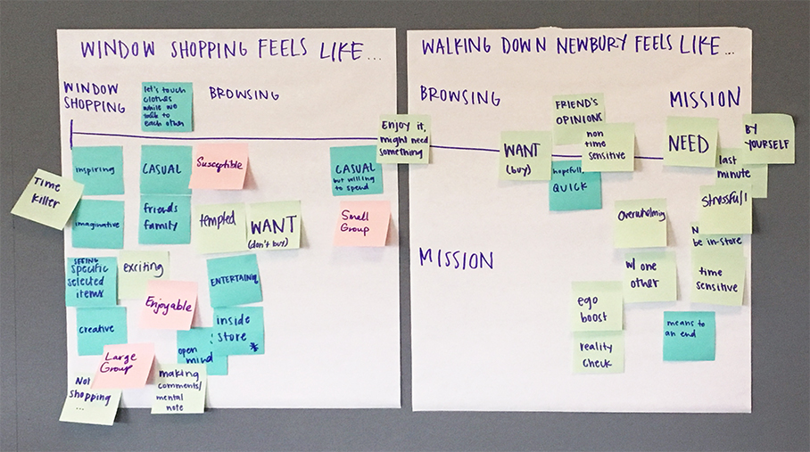
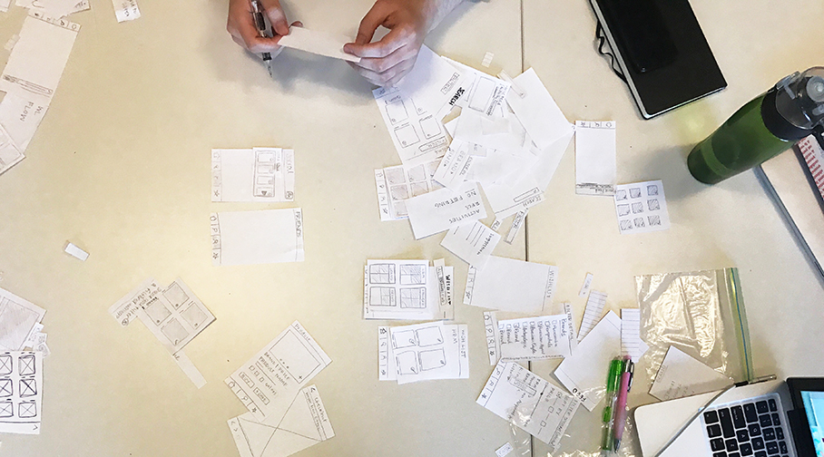
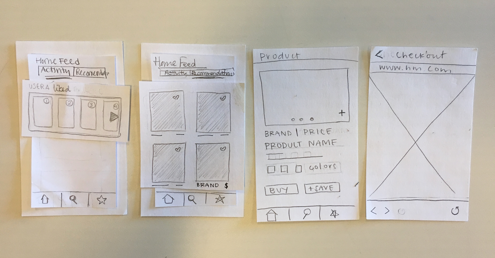
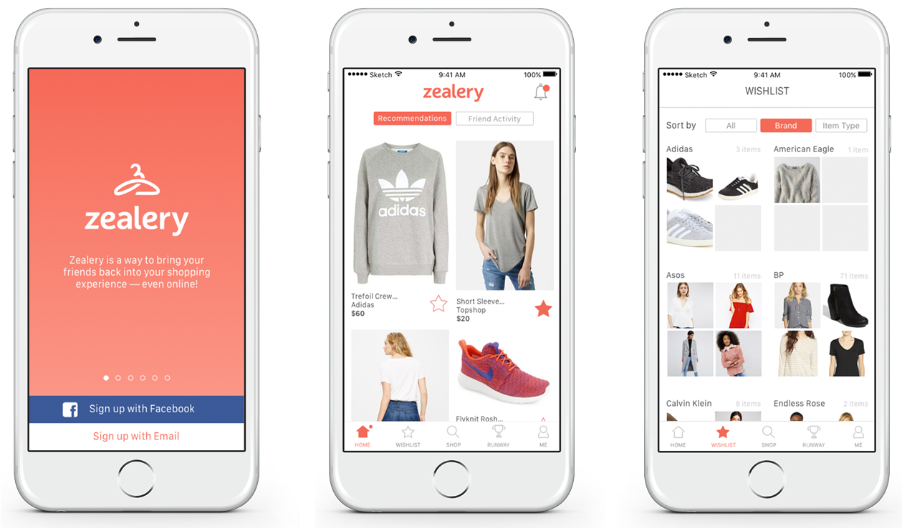

Zealery is a clothes shopping app, designed to capture the feeling of walking down Newbury St. with their friends but in the convenience of a mobile app. The app uses machine learning to show users clothing recommendations based on their style in tagged Facebook photos. A few of those items can be sent to friends to ask what they think the user should buy using a game mechanic built into the app.
All work completed in collaboration with Christina Allan, Sabrina Kantor, Juliana Tennett, and Brandon Siu.
Our team started of this project by taking the time to conduct our own research and discovery. We used the first three weeks of our timeline as the discovery phase, getting ourselves aquainted with the goals of our clients and the users we wanted to reach with the app.
As a team we conducted branding exercises and distrubuted a survey that was answered by 60 individuals from potential users to gain a better understanding of our target audience and their experience around shopping. As a result of our research we were able to create a shopping spectrum that helped us realize the different types of shoppers this app might reach.

Once we had figured out our audience, we began the design and development of the different screens for the application. We did this by creating cut-out paper wireframes to make sure the flow through the app worked and included each and every necessary button and method of interaction before we moved onto digital designs.


When moving on to the high-fidelity designs, we looked back at the branding exercises we had completed earlier in production and designed a brand for the app that encompassed the clean and friendly feeling we wanted to express through the app. A big part of the design process focused on how to make a distinct differentiation between the shopping aspects and the social sharing game. We ended up using two different colors to seperate the two parts of the app, coral for the main UI and teal for the "runway" sharing aspect of the app.
